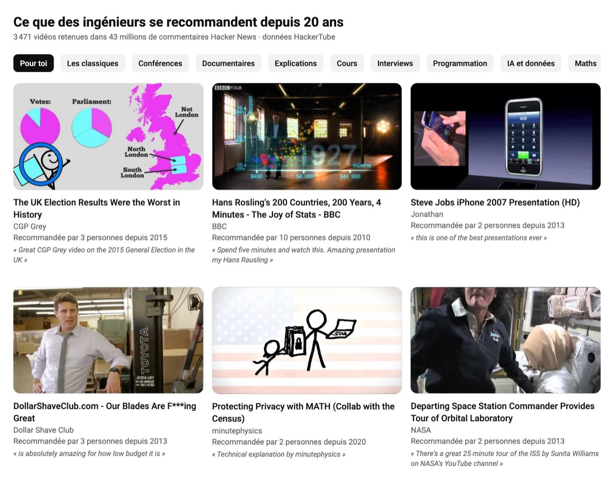
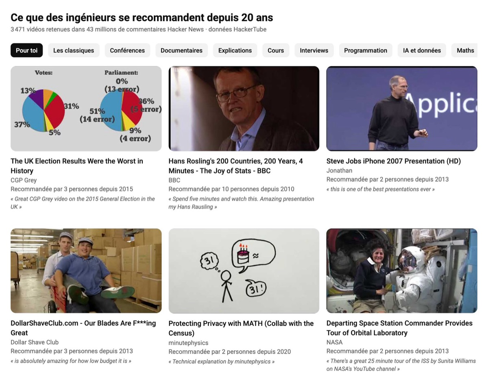

YouTube sans clickbait
Une extension Chrome qui remplace les miniatures par une vraie image de la vidéo, et l'accueil par des vidéos que des développeurs se recommandent depuis près de 20 ans.


!
À faire sur ordinateur, dans Chrome, Brave ou Edge. Les extensions ne marchent pas sur téléphone.
1
le plus rapide
Installer l'extension de la vidéo
- Télécharge l'extension et décompresse le fichier.
- Ouvre
chrome://extensionset active le mode développeur, en haut à droite. - Clique sur Charger l'extension non empaquetée et choisis le dossier
extension. - Recharge YouTube.
Deux boutons apparaissent en bas à gauche de YouTube pour revenir aux miniatures et aux recos d'origine.
2
comme dans la vidéo
La refaire avec Claude Code
- Télécharge les données sur hackertube.org/data et décompresse-les.
- Ouvre Claude Code dans ce dossier.
- Colle cette demande.
Lis DATA.md dans ce dossier. Crée-moi une extension Chrome pour YouTube. Elle remplace l'accueil par ces vidéos, avec des filtres par type et par thème. Elle affiche partout l'image du milieu de la vidéo au lieu de la miniature, avec un bouton pour revenir aux originales. Et sur une vidéo, elle remplace les suggestions de droite par des vidéos proches de la liste. Sur une vidéo de la liste, elle affiche combien de personnes l'ont recommandée et un de leurs commentaires.
3
vlogs, DIY, robotique…
Ton propre algorithme
Ouvre Claude Code dans un dossier vide, colle cette demande et remplace la partie en jaune par les liens des chaînes que tu aimes.
Crée-moi une extension Chrome pour YouTube. Elle remplace l'accueil par les dernières vidéos de ces chaînes : [colle ici les liens des chaînes, par exemple https://www.youtube.com/@750g_recette_de_cuisine]. Vérifie en ligne l'identifiant de chaque chaîne. Elle cache les Shorts partout, y compris dans la recherche. Elle affiche l'image du milieu de chaque vidéo au lieu de la miniature, avec un bouton pour revenir aux originales. Pas de clé API. Explique-moi ensuite comment l'installer dans Chrome.
Donne les liens des chaînes plutôt que leurs noms, plusieurs chaînes portent parfois le même. YouTube ne donne que les 15 dernières publications de chaque chaîne, donc une chaîne qui fait surtout des Shorts apparaîtra peu.